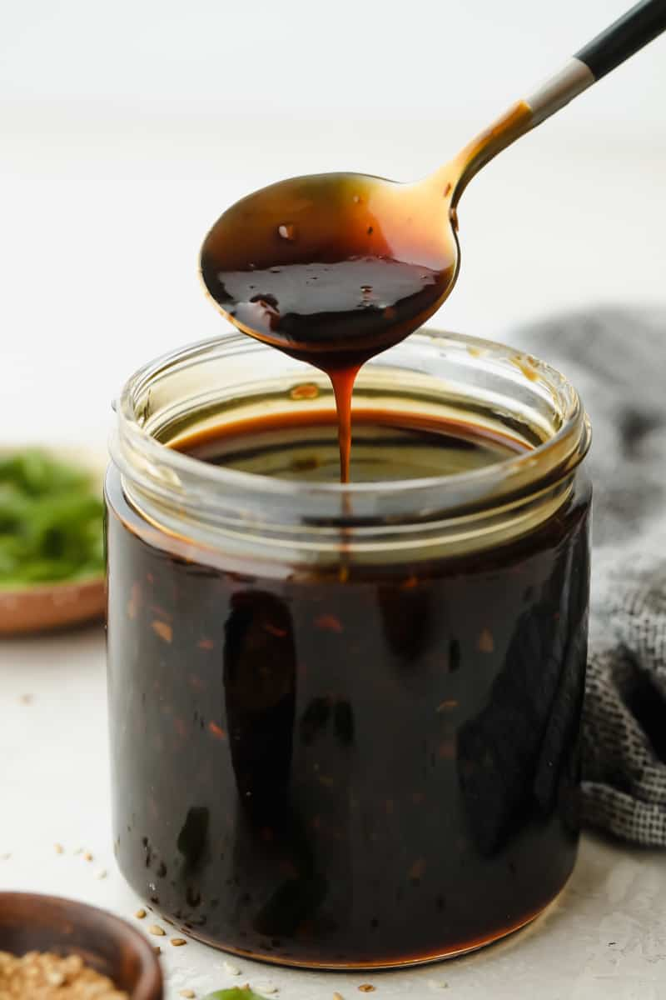

Teriyaki Sauce

How to make Teriyaki Sauce:
Pour it on your food for a delicious sauce, bozo.
Ingredients:
- water
li>
- soy sauce
- honey
- brown sugar
- garlic powder
- ginger powder
- corn starch
- Boil the water.
- Add everything else.
- Mix some corn starch with some water and stir it up. Pour it in and stir until it